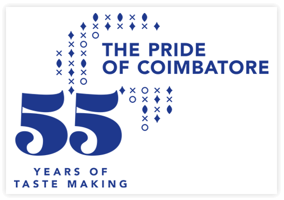

The Journey of Annapoorna started when the brothers, Damodaraswamy Naidu, Rangaswamy Naidu, Ramaswamy Naidu and Lakshman Naidu decided to start a petty shop opposite to the Kennedy Theatre to support the family. With sheer determination on delivering quality products at reasonable price, the business started attracting more loyal customers. In the 1960’s the owner of the Kennedy Theatre on seeing their determination and quality of business invited them to run the canteen at the theatre. ‘ The Famous Keera Vadai and Filter coffee’ was born. Back in the days quality snacks was rare, serving piping hot Filter coffee and crispy keera vada cooked from fresh oil set a new roll to the business.
In 2years the Brothers were offered another canteen at the Central Theatre. The brothers were already planning on expanding as their customers were overflowing, selling snacks during the interval was restricting the customers. They decided to open their first bakery, Royal Coffee Bar at RS Puram. Following the Bakery, the brothers found a rental space on DB Road and decided to set up their first restaurant.

The first branch of Sree Annapoorna, named after the Goddess of food Annapoorani, opened its doors to customers in 1968. This was at a time when the city’s restaurant industry was dominated by two giants —Kenneis Bhavan and Ideal Coffee house. The two groups enjoyed a reputation as the food factories of Coimbatore because of the massive volumes of food they would produce. “Though these two giants were located close by, we did not aim at competing with them We only wanted to satisfy the hunger of those who came in search of us.We never dreamt of acquiring their customers but wanted to create our own set of customers,” said Mr. Ramaswamy Naidu.